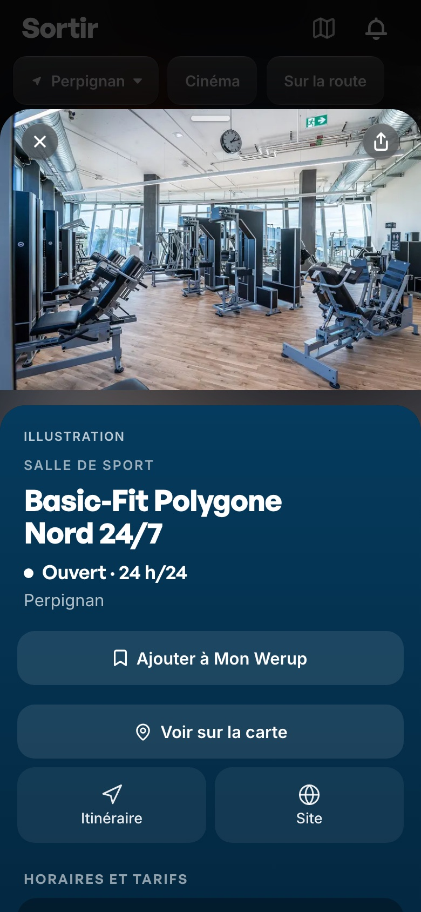
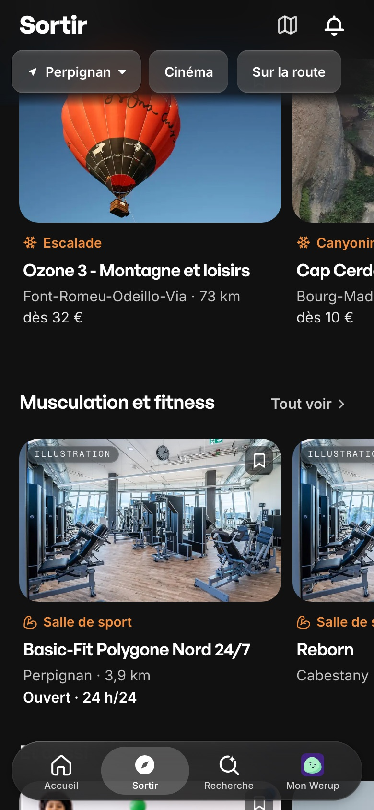
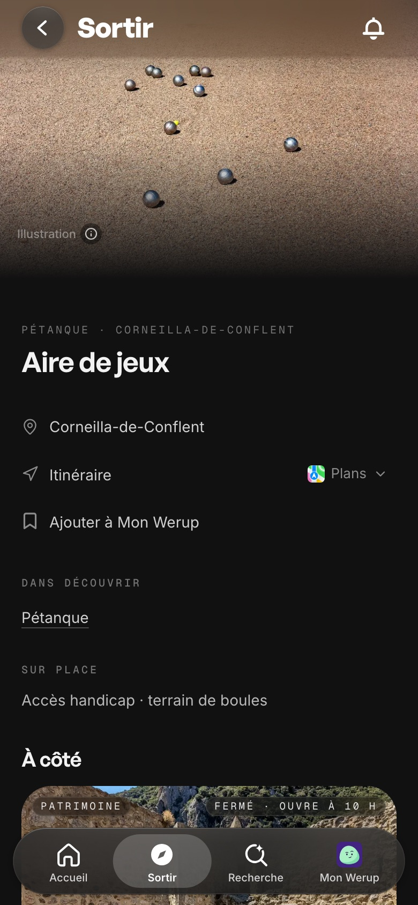
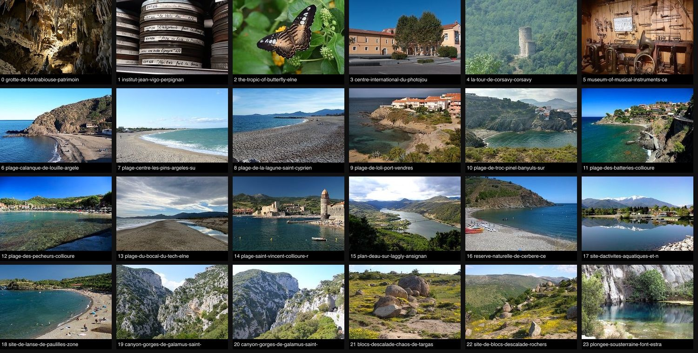
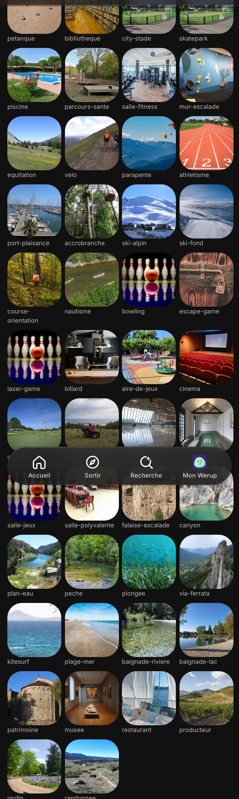

Tout lieu a une image
Captures de werup.app en production, sur iPhone, le 18/11 vers 2 h.
La fiche d'un lieu sans photoUne vraie photo de son type (Wikimedia Commons), dite « Illustration », créditée en bas.
Sortir, sans objet dessinéLes lieux sans photo ont la photo de leur type, marquée « Illustration ».
La page d'un lieuLa photo de son type, « Illustration » et un petit « i » pour la source.
43 lieux connus ont reçu LEUR photoGalamus, Bouillouses, Matemale, Cap Béar, Paulilles, Fontrabiouse… (vraies photos du lieu).
Les 46 types de lieuxChacun a sa vraie photo ; jamais d'image générée.